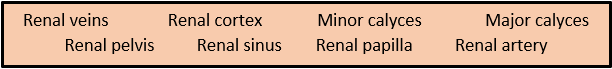
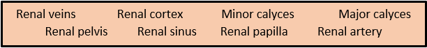
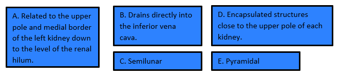

Anatomy of the kidney
Complete the image with the missing parts of the kidney. Write the words from the box in the space with the number that represents the location in the image.

Complete the image with the missing parts of the kidney. Write the words from the box in the space with the number that represents the location in the image.

Do the following matching exercises about the topographical relations of the kidney.
Read the sentences and write A if the sentence is about the anatomy of the ureter or T if it is about the topographic relation of the ureter.
Complete the summary of the last part of the article with the letters of the phrases from the box.

Obra publicada con Licencia Creative Commons Reconocimiento Compartir igual 4.0